决策地图：把「节假日大客流 · 枢纽换乘拥堵治理」落到地图上
智能体决策面板在节假日场景下产出分级治理方案（基准 / A / B / C / D ★）。 本次改动把这些决策结果叠加到百度地图上——枢纽换乘环、基准瓶颈圈、 线路治理色光带、方案摘要卡，并让面板的方案切换与地图实时联动。
01本次改动
改动前，决策面板是纯数字：方案对比、护栏判定、调用链都只在面板里，地图上没有任何表达。 本次新增「决策地图」图层，消费与决策面板同一份数据文件（唯一真源）， 不引入第二套数字，所有圈层、光带、标注都能与决策文档逐一核对。
- js/decision-map.js（新增）— 决策结果地图渲染与交互，纯前端、零第三方依赖，仅 bmap.html 加载。
- bmap.html（修改 1 处）— 在模块脚本区引入 decision-map.js。
- js/agent-decision.js（修改 1 处）— 方案 Tab 切换时广播 gdp:planchange 事件，供地图联动。
- README.md（修改 1 行）— 目录说明补充新模块条目。
02地图上看得见什么
- 枢纽换乘环（青色）— 南昌站：节假日换乘占比约 55%（换乘仿真推演）· 枢纽饱和度 0.498（仿真），即本次治理对象本身。
- 基准瓶颈圈（脉冲）— baseline.top_bottlenecks 前 5 站：庐山 1.196 / 婺源 0.994 / 上饶 0.957 / 庐山西海 0.820 / 大觉山 0.783，圈色与注记随所选方案更新。
- 线路治理光带 — 按所选方案 per_line.saturation_section 着色的半透明加宽光带，压在原线网之上，一眼看出哪条线在超饱和。
- 方案摘要卡（页面顶部居中）— 随方案切换更新关键指标与基准对比，与决策面板双向联动。
| 饱和度档位（圈层 / 光带共用） | |
|---|---|
| ≥ 1.05 · 超饱和 | 0.90 – 1.05 · 逼近容量 |
| 0.70 – 0.90 · 偏紧 | < 0.70 · 充裕 |
03三步演示
- 在项目根目录启动静态服务器：
python -m http.server 8000 --bind 127.0.0.1。 - 浏览器打开
http://localhost:8000/bmap.html?scenario=holiday（如需临时换 Key：加?ak=你的AK）。 - 观察地图：节假日场景自动开启「决策地图」；依次点击摘要卡或决策面板中的 基准 → A → B → C → D，看环庐山、赣东北两条最紧线路由红转黄、再转绿。
提示：若页面此前已打开旧版本，请强刷一次（Ctrl + F5）以加载新的脚本。 工具栏「决策地图·枢纽治理」按钮可随时开关图层；「换乘仿真·南昌站」模块提供站内换乘的流向推演，可与枢纽环对照查看。
04截图证据
以下为 2026-09-26 于 localhost:8000 的实拍截图（窗口 1920 × 1080，百度底图 + 覆盖物）：先看 1 张总览对比，再按治理前 / 后与三个特写依次查看；均可在 assets/ 目录中查看原图。
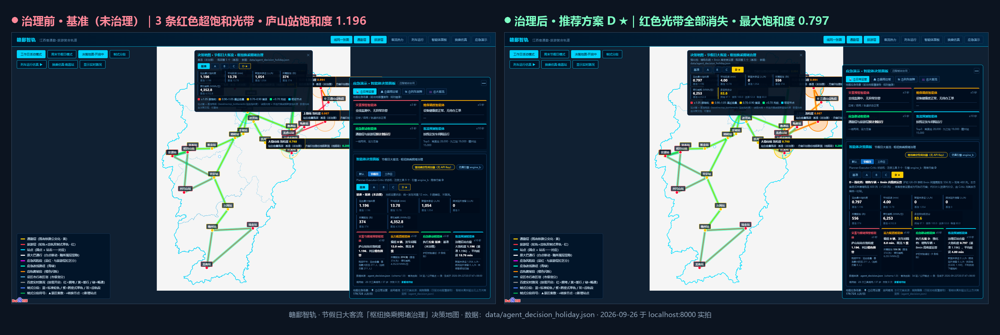
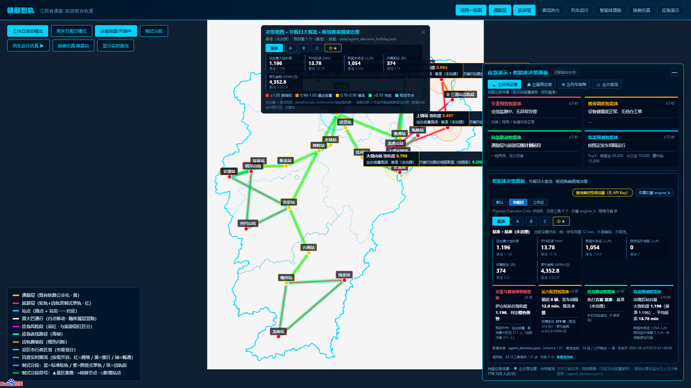
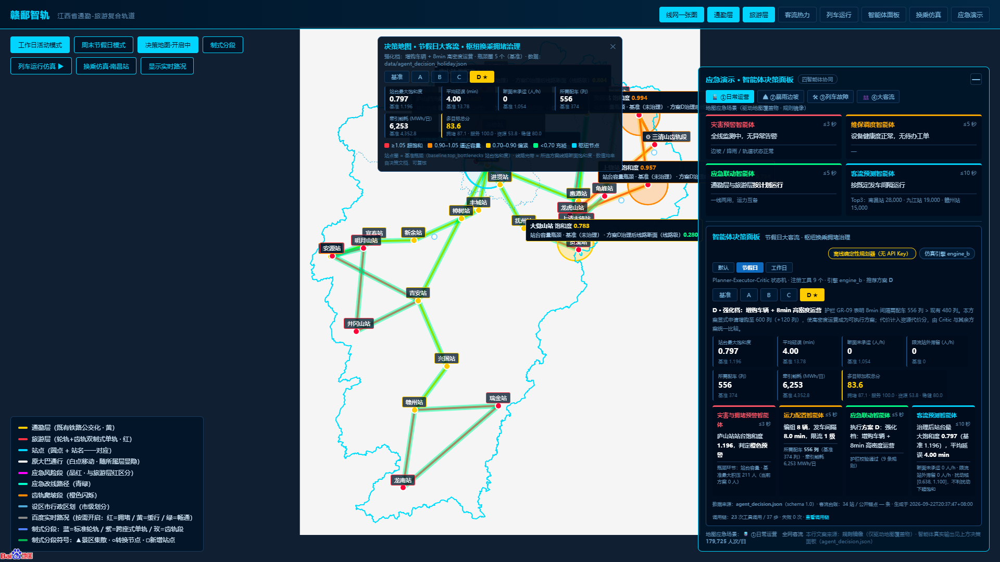
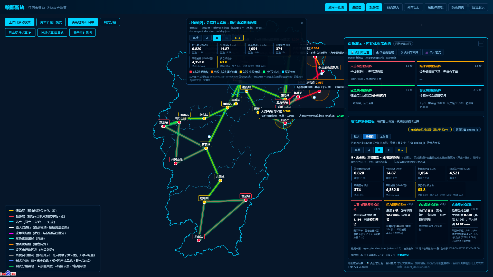
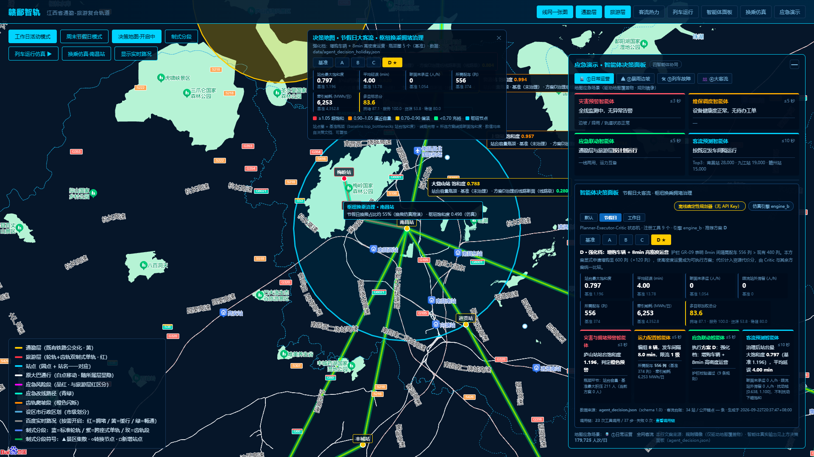
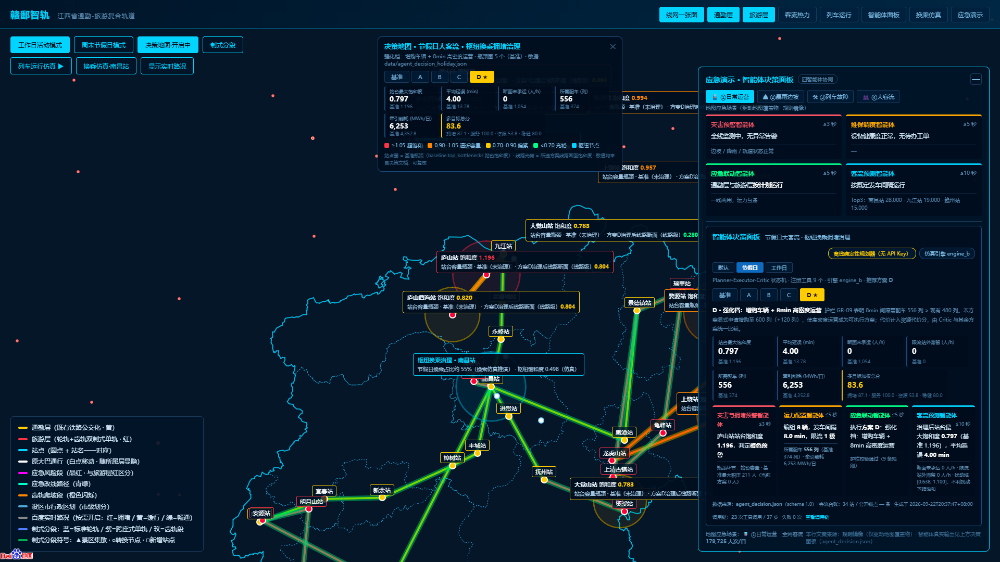
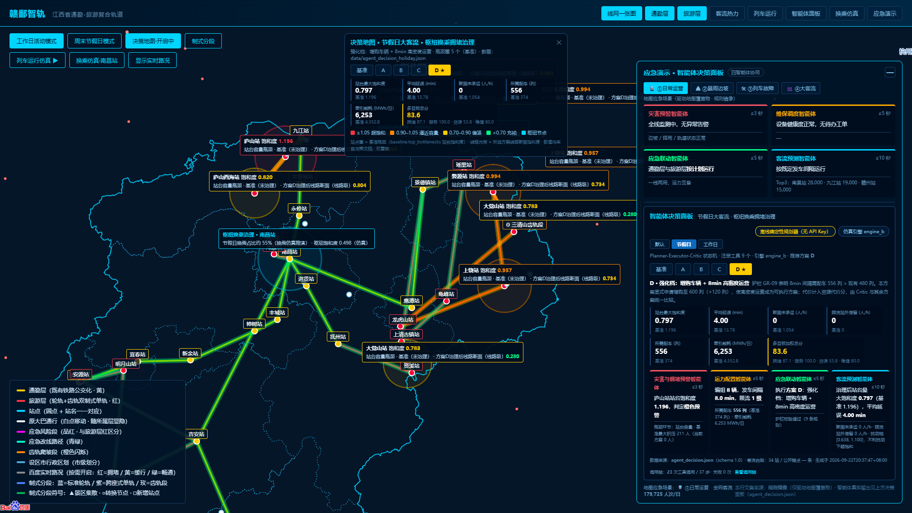
05数据口径与边界
- 页面所有业务数值来自 data/agent_decision_holiday.json（schema 1.0，2026-09-22 生成），前端不持有任何硬编码业务常量。
- 站点圈为基准（未治理）瓶颈；切换方案时圈旁给出「方案 X 治理后线路断面（线路级）」为近似值——按该站所属线路中最紧断面折算，不是站台级重仿真，已在标签与图例中如实标注。
- 枢纽换乘占比约 55% 与项目内「换乘节点动态仿真（南昌站）」模块保持一致，属仿真推演值；枢纽饱和度 0.498 来自决策文档指标。
- 站台饱和度、延误、未承运等均为自研「线网-场站-枢纽」三层饱和度假真的推演结果（与项目其他模块同一口径），非实测统计数据。
06文件、验证与回滚
- 新增 js/decision-map.js · 备份 _backup_decisionmap_before_20260926/（含改动前的 bmap.html / README.md / js/agent-decision.js 原版）。
- 验证 ① 页面加载无 JS 异常（早期错误捕获为空）；决策地图自动开启，瓶颈圈 5 个、线路光带 12 条。
- 验证 ② 联动回归：基准视图 3 条红色光带 → 推荐方案 D 0 条；B 限流视图仍为 3 条（断面未变，与仿真结论一致）。
- 验证 ③ 像素级抽查：同机位截图红色像素占比 基准 → D 由高转低、黄色占比反向上升，与档位换色逻辑一致。
- 回滚 还原备份目录中的 3 个文件并删除 js/decision-map.js，即回到本次改动前状态。
07制式分段图层与坐标校准（2026-09-26 增补）
依《全线轨道制式分段适配详细说明》新增「制式分段」一键图层：开启后全网按制式重新着色—— 标准轮轨（蓝）、跨座式单轨（紫）、齿轨段（玫红闪烁，仅三清山 / 大觉山 / 庐山秀峰—三叠泉三处）， 并叠加换乘 / 制式转换节点（白圈）、景区集散中心（绿三角）与文字稿新增站点 （白方块，放大后显示站名）。该视图与常规配色（黄 / 红 / 橙）完全区分； 开启时原线与旧齿轨标记自动压暗，不产生重叠堆色。
- 坐标校准——三清山（→ 118.06, 28.91）、庐山西海（→ 115.55, 29.24）、龙虎山（→ 116.96, 28.10）、龟峰（→ 117.41, 28.32）四站按实地位置修正；轨迹、路书与全部数据文件同步。
- 新增几何——庐山南麓观光环（庐山站—索道下站—秀峰—三叠泉—北门）及昌九 / 昌抚 / 大觉山走廊的新增站点。
- 演示——bmap.html 工具栏点「制式分段」；放大到 10 级后显示新增站点与转换点批注。
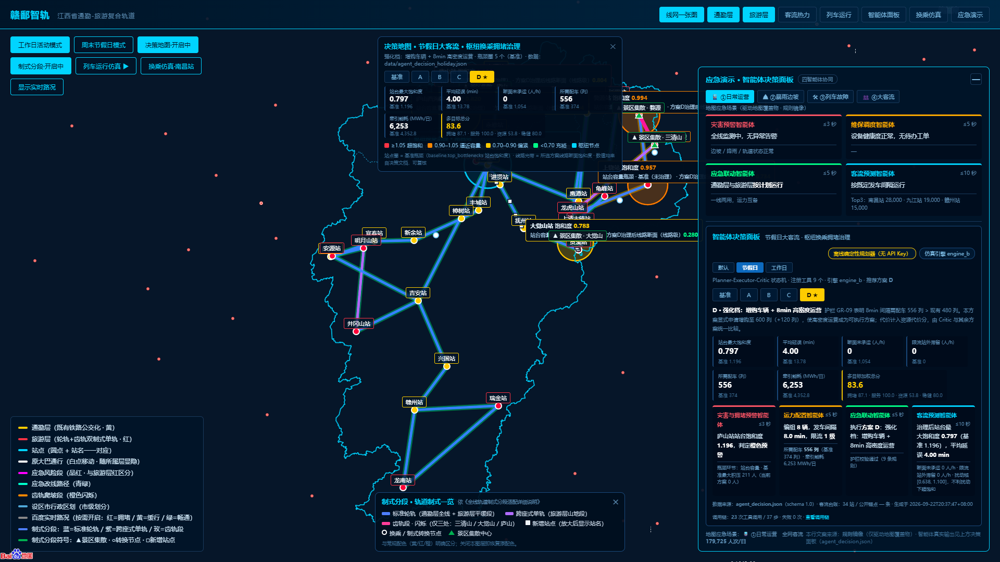
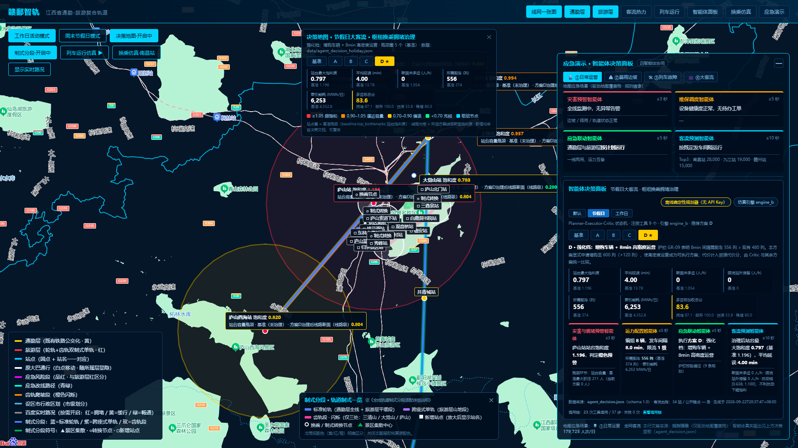
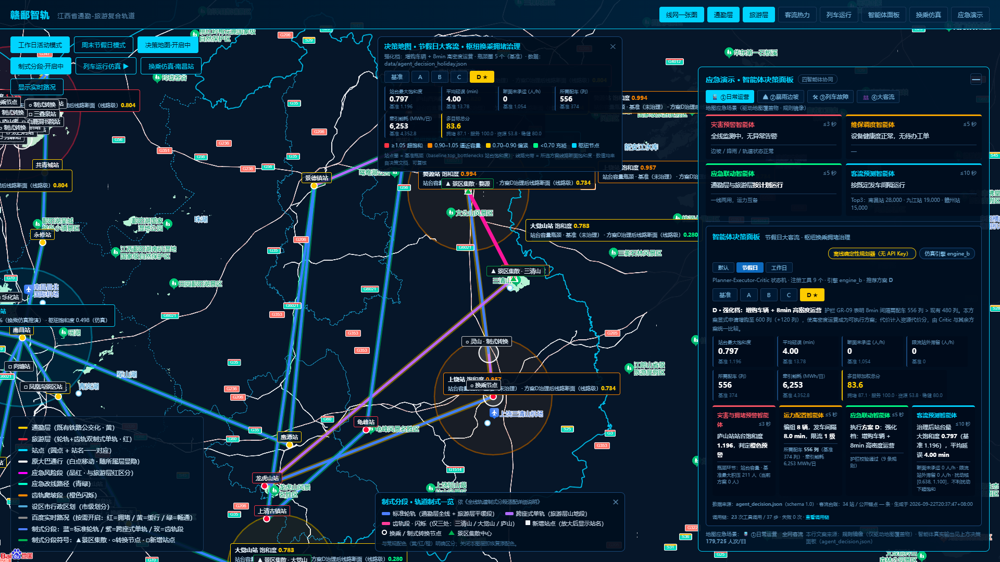
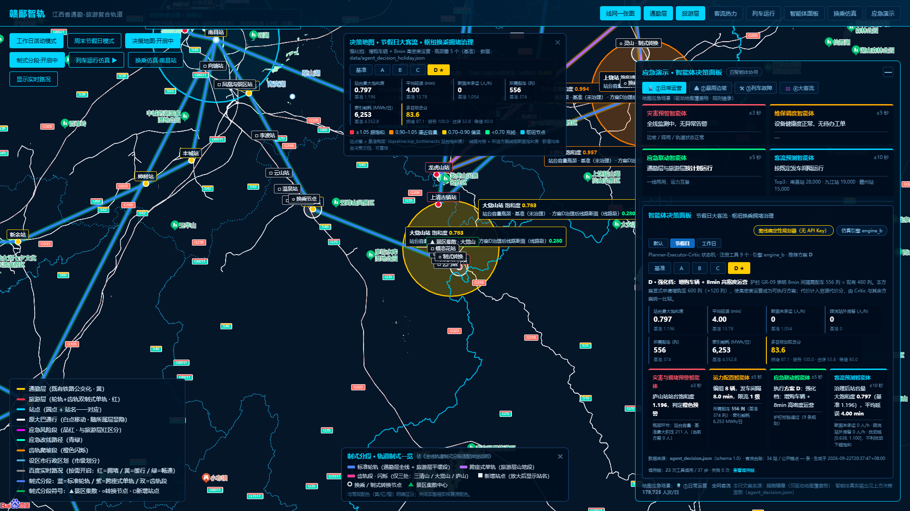